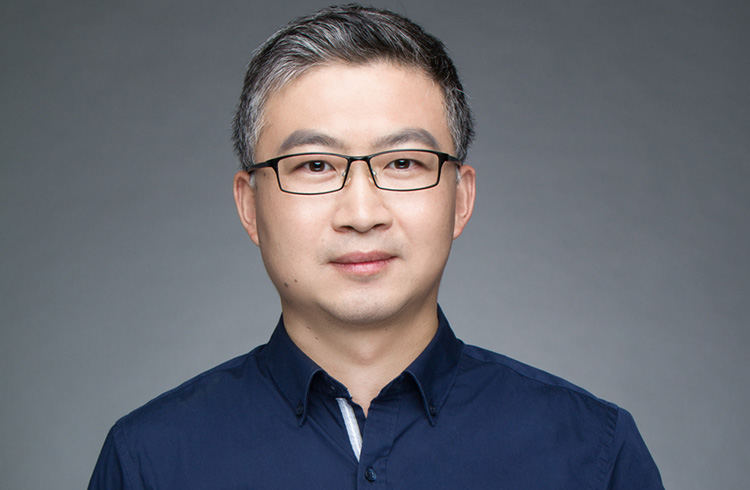
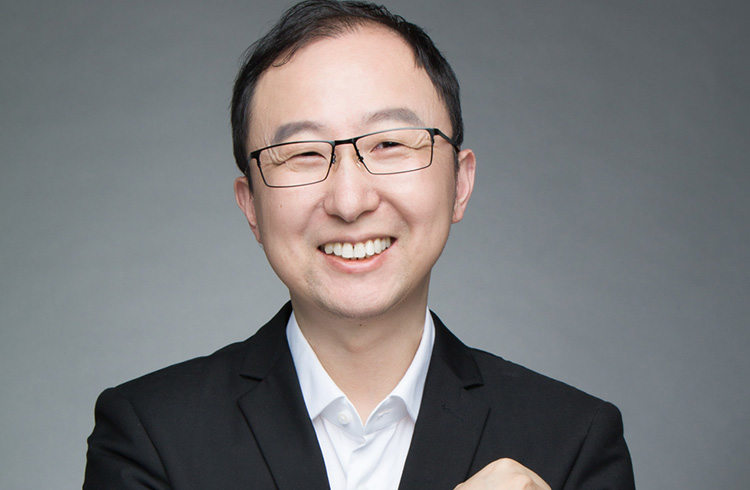
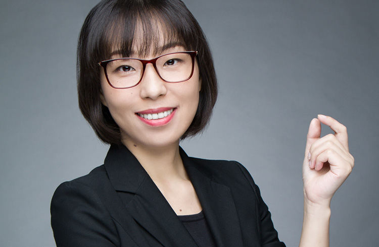
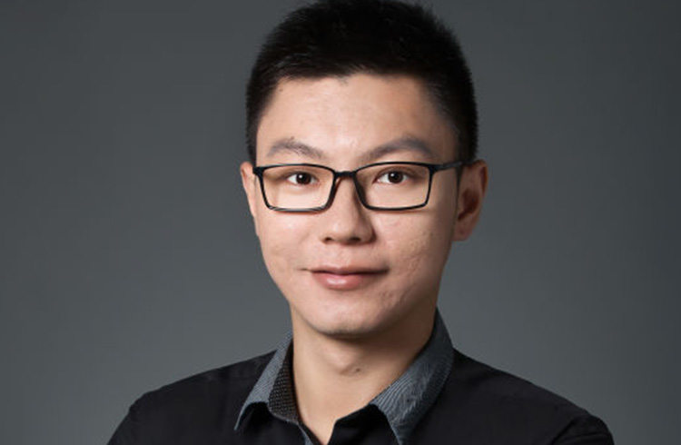
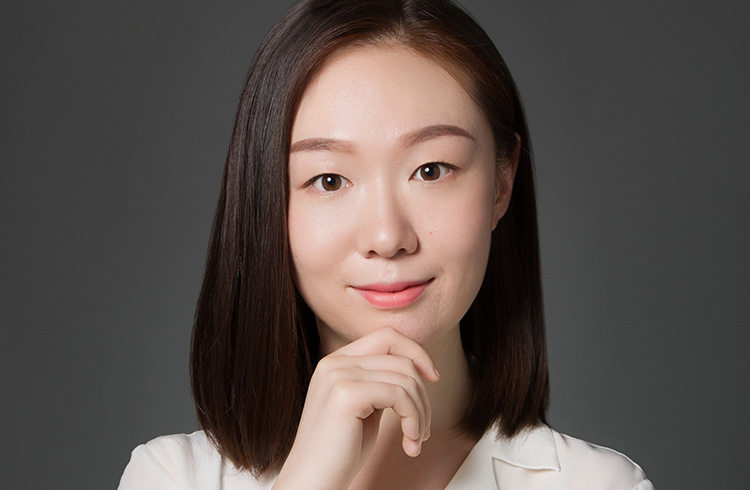
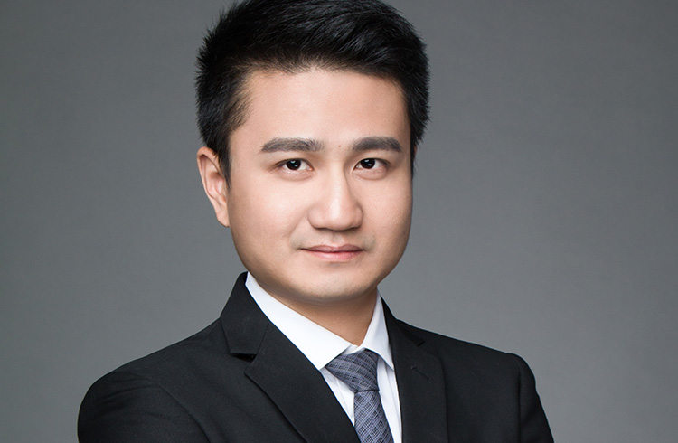
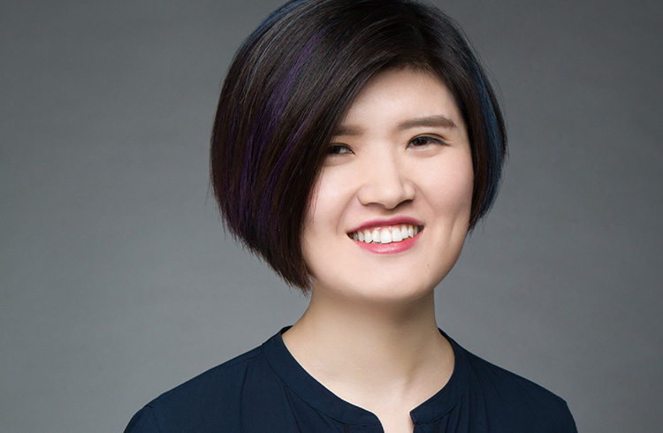
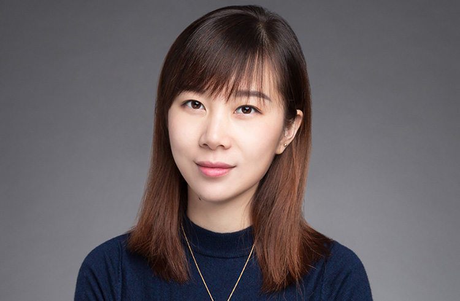
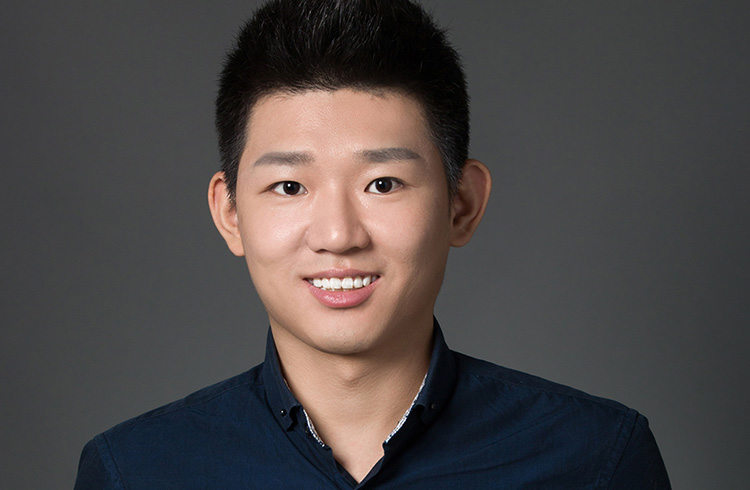

拥有丰富投资经验的青松基金
随时准备着帮助有梦想的企业家们
-

刘晓松-创始合伙人
投资经验超过20年，是中国最早的机构天使开创者之一，并成功创办了多个TMT企业。
-

董占斌-创始合伙人
董占斌先生拥有逾16年的投资经验。其职业履历横跨企业战略投资、投行、风险投资等投资工作的各个方面。
-

苏蔚-创始合伙人
苏蔚先生拥有超过18年的投资工作经验，参与过天使投资、企业战略投资、上市公司并购等不同阶段的投资工作。
-

涂岚-合伙人
涂岚女士在青松基金负责募资、投后及财务、人力资源、法务、品牌等职能管理。
-

亓骥才-投资团队
在加入青松基金之前，亓骥才就读于山东大学和上海交通大学。本科期间积极投身学生工作，曾担任学院学生会主席。
-

张放-投资团队
张放是青松基金的投资经理，负责文化娱乐、内容和消费升级领域的投资。
-

熊浩然-投资团队
熊浩然是青松基金的投资经理，负责消费升级领域的投资。
-
王兆乾-投资团队
王兆乾，恪守科研方法论的学院派投资人。于2016年加入青松基金，主要负责教育、人工智能和其他创新技术领域的投资。
-
张腾-投资团队
左手疯投右手诗的90后, 对探索未知事物充满好奇心｡
-

周亢-投资团队
周亢是青松基金的投资分析师,负责线上线下娱乐、消费升级领域的投资。
-

张晨-投资团队
2015年加入青松基金，研究体育文化领域。本科及研究生主攻新闻传播学，信息敏感、探寻未知、乐于分享，擅长挑选与联结。
-

孟德洋-投资团队
孟德洋在青松基金负责发现泛娱乐、教育领域的投资机会。孟德洋在从上海交通大学研究生毕业后即加入青松基金。